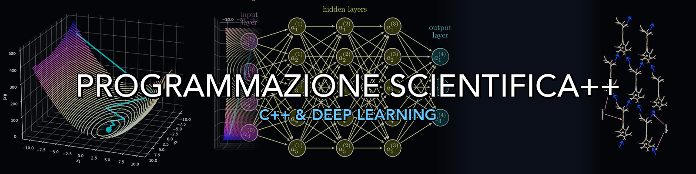

Programmazione Scientifica++


Scarica le slide pubblicate finora, per consultarle offline.
Benvenuti al corso di Programmazione Scientifica++ per la laurea triennale in Fisica.
In questo corso esploreremo i fondamenti e i concetti avanzati del linguaggio C++. A partire dalle basi della programmazione procedurale (confrontandola con il C che già conoscete), passeremo alla programmazione orientata agli oggetti (OOP), all’utilizzo delle classi, dei template e all’uso pratico della memoria.
La teoria verrà subito messa in pratica: durante le ore di laboratorio lavoreremo insieme allo sviluppo da zero in C++ di una Rete Neurale MLP (Multilayer Perceptron) per il riconoscimento di numeri scritti a mano utilizzando il dataset MNIST, ispirandoci alla metodologia del libro “Make Your Own Neural Network” di Tariq Rashid.
📚 Lezioni Teoriche
- Lezione 01: Introduzione al Corso, Obiettivi e Testi di Riferimento
- Lezione 02: Deep Learning — Neurone, MLP e Vettorizzazione
- Lezione 03: Deep Learning — Loss, Backpropagation e Ottimizzatori
- Lezione 04: Struttura di un Programma, Tipi, Scope e Namespace
- Lezione 05: Array C-Style, Puntatori, Reference e Funzioni
- Lezione 06: Costanti, Aritmetica dei Puntatori e Introduzione alle Classi
- Lezione 07: Incapsulamento, Getter/Setter e Costruttori
- Lezione 08: Header Files, Compilazione e Memoria (Stack/Heap)
- Lezione 09: Distruttori, RAII e Metodi Costanti
- Lezione 10: Deep Copy, Regola del Tre e Overloading degli Operatori
- Lezione 11: File I/O, Parsing CSV e Namespace negli Header
- Lezione 12: Ereditarietà, Polimorfismo e Classi Astratte
- Lezione 13: Membri e Metodi Statici
- Lezione 14: Funzioni Friend, Ottimizzazione (-O3) e Libreria Eigen
- Lezione 15: Tipi Enumerati (enum class) e Upcasting
- Lezione 16: Downcasting (dynamic_cast) e Template
- Lezione 17: Template negli Header e Smart Pointers
- Lezione 18: La Standard Template Library (STL)
- Lezione 19: Gestione degli Errori — Eccezioni (Parte 1)
- Lezione 20: Eccezioni (Parte 2) e Design Pattern nel Deep Learning
💻 Laboratori Pratici (BASIC_NEURAL++)
- Lab 01: Setup dell’Ambiente — CMake, Eigen e OpenCV
- Lab 02: Primo Programma C++ — Discesa del Gradiente e Backpropagation
- Lab 03: Tipi Base e Funzioni di Attivazione
- Lab 04: Gestione della Memoria e Vettori C-Style
- Lab 05: Programmazione a Oggetti — la classe Matrix e il DenseLayer
- Lab 06: Regola del Tre, Polimorfismo e SequentialNetwork
- Lab 07: Funzioni di Attivazione e Performance (-O3)
- Lab 08: Tipi Enumerati, Inizializzazione dei Pesi e Gerarchia delle Attivazioni
- Lab 09: Il Grande Refactor — Template e Matrix
- Lab 10: STL, Smart Pointer e le Strategy dell’Addestramento
- Lab 11: Serializzazione del Modello e Factory Method
- Lab 12: Il Dataset MNIST — Parsing CSV, Batch e OpenCV
- Lab 13: Backpropagation — la Rete Impara
- Lab 14: Il Trainer e le Metriche — Addestrare su MNIST
- Lab 15: Studi di Performance e Tracce dei Progetti Finali
- Lab 16: Inferenza, Back Query e Visualizzazione dei Risultati
🧪 Soluzioni dei Laboratori
Il codice del framework allo stato in cui deve trovarsi al termine di ogni laboratorio. Serve per confrontarsi con la propria versione, e per ripartire da un punto pulito se un laboratorio non è riuscito:
📦 Soluzioni degli Esercizi
Le soluzioni delle lezioni già svolte, pronte da compilare. Ogni archivio contiene i sorgenti, il comando di compilazione e l’output atteso:
🔧 Informazioni Tecniche
Per seguire le esercitazioni pratiche e sviluppare il progetto finale, avrai bisogno di un ambiente di sviluppo configurato. In particolare saranno richiesti:
- Un compilatore C++ (es.
g++oclang++con supporto a C++17). - CMake come sistema di build.
- Libreria Eigen 3 per l’algebra lineare ad alte prestazioni.
- Libreria OpenCV per visualizzare le immagini del dataset MNIST.
- Python 3 con
matplotlib(per i grafici di addestramento).
Tutto il software può essere facilmente installato gratuitamente su Linux (tramite apt), su macOS (tramite Homebrew) o su Windows (utilizzando WSL o MSYS2).
[!NOTE] I dettagli passo-passo su come installare il compilatore e le librerie in questi tre sistemi operativi verranno affrontati direttamente nella Prima Lezione di Laboratorio. Non preoccuparti di installarli prima!